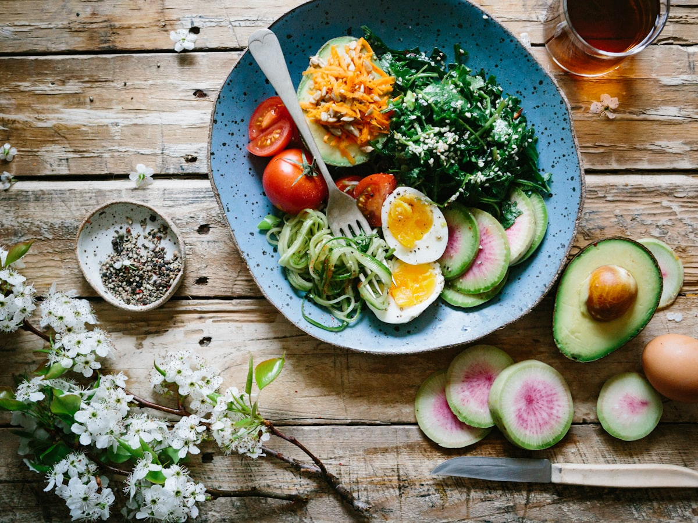

Alimentación consciente
Aprende a organizar tus comidas con criterios sencillos y realistas, adaptados a tu día a día.
Aeternum Vital es un programa educativo que te acompaña a mejorar tu alimentación, tu movimiento diario y tu constancia. Sin promesas mágicas: los cambios reales se construyen con buenos hábitos.
Los resultados pueden variar de persona a persona y dependen de hábitos, alimentación y constancia.

No vendemos soluciones únicas ni milagrosas. Te damos las herramientas para entender tu rutina y mejorarla de forma gradual y sostenible.
Aprende a organizar tus comidas con criterios sencillos y realistas, adaptados a tu día a día.
Incorpora actividad física a tu rutina con propuestas progresivas, sin necesidad de gimnasio.
Herramientas de seguimiento y acompañamiento para sostener tus nuevos hábitos en el tiempo.
Identificamos juntos tus rutinas actuales para entender por dónde empezar.
Sigues el programa de alimentación y movimiento, paso a paso y a tu ritmo.
Con seguimiento y acompañamiento consolidas un estilo de vida saludable.
"Lo que más valoro es que aprendí a organizar mis comidas y a moverme más. Es un cambio de rutina, no una dieta imposible."
María G.Participante del programa
"El acompañamiento me ayudó a ser constante. Entendí que los buenos hábitos se construyen poco a poco."
Javier R.Participante del programa
Testimonios de participantes. Los resultados pueden variar de persona a persona y dependen de hábitos, alimentación y constancia. Ver más historias.
Empieza hoy a construir hábitos que puedas mantener.